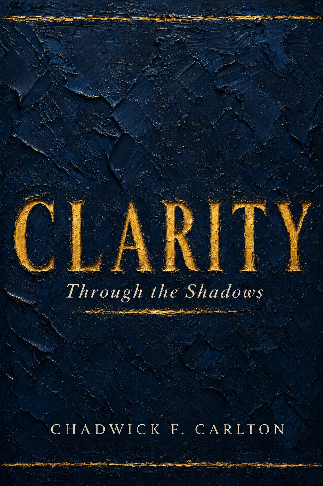

A new book by Bishop Chadwick F. Carlton
Through the Shadows
Coming 2027
The pandemic, racial reckoning, lost jobs, and delayed dreams all left people asking for change. Bishop Carlton argues that what we are really asking for is clarity: the ability to see better days through the smog of life without collapsing.

Why this book, why now
Shouting for change doesn't produce a strategy or a next step. A clear plea for clarity does. Without it, Bishop Carlton writes, life becomes long and heavy, and chaos turns into the lens our children inherit.
Without clarity, we find ourselves:
This book is his answer. When you finish it, you will know when you have clarity, and you will know when you don't.
What changes when you read it
Learn to notice the small nudges, people, and interruptions that are quietly pointing you toward your purpose.
Sort the many things you can do from the few you must do, so your time stops leaking into good-but-wrong pursuits.
See how bitterness keeps you counting losses, and how to become the bag that bounces back instead of the doormat.
Reframe illness, setbacks, and delays as the places where character, compassion, and your next season are formed.
Weigh tempting offers with one plain question: does this clarify who I am, or only change my circumstances?
Trade the constant stream of opinions for twenty minutes of stillness, where decisions become clearer and God feels near.
Inside the book
Every chapter pairs a personal story from Bishop Carlton's life with history and scripture, and leaves you with something you can use. Here's what each one gives you.
Notice the small nudges, people, and interruptions at the edges of your life that point toward your purpose.
See ordinary beginnings, hard teachers, and chance encounters as preparation for what's coming next.
Build the steady habits, and the coach, counselor, and choreographer, that keep you clear.
Separate what you can do from what you must do, and stop spending your life on the wrong one.
Release old disappointments so they stop clouding the opportunities in front of you.
Find the value hidden in illness, setbacks, and seasons that make no sense yet.
Turn the dream others call impossible into a plan with real, actionable steps.
Use waiting to build patience and humility, and to get ready for what you've asked for.
Answer injustice with composure and clarity instead of retaliation.
Quiet the noise with a simple daily practice that makes decisions clearer and God feel near.
Tell a real opportunity from an attractive distraction before you say yes.
See past filters and facades, and find the courage to live your whole story.
"Passion is what I can do, while purpose is what I must do."Bishop Chadwick F. Carlton
Pre-order now
The first 200 readers who pre-order through November 8, 2026, whichever comes first, become Founding Readers. They pay the founding price of $19.95 and receive this bonus:
The founding offer has ended. Clarity is now $24.99.
Founding price $19.95 $24.99 for the first 200 readers, through November 8, 2026
Founding price through November 8, 2026. $24.99 after.
+ $7.99 flat shipping, or free pickup at Healing H2O, The Temple of Healing Waters Church in Dulles, VA. Ships to US addresses only, including APO/FPO.
One paperback, reserved before launch.
The founding offer closes after 200 readers or on November 8, 2026, whichever comes first.
Who it's for
Questions
Clarity releases in 2027, and copies ship during launch week. Founding Readers receive the exact date and their Q&A invitation by email.
One of the first 200 people to pre-order through November 8, 2026. Founding Readers pay $19.95 instead of $24.99 and receive an invitation to a private Q&A with Bishop Carlton. The offer closes after 200 readers or on November 8, 2026, whichever comes first.
Yes. For group, church, or conference orders and speaking requests, use the contact form after launch.
Yes. The Clarity Companion Study Guide is part of the book, printed in the same copy. It is a chapter-by-chapter guide with a summary, reflection questions, group discussion questions, a weekly practice, and a scripture for each chapter and the epilogue. It works for personal reflection or a 13-week small group.
Shipping is a flat $7.99 per order. You can also choose free pickup at Healing H2O in Dulles, VA. See the address below.
Choose free pickup at checkout and collect your copy in person at:
Healing H2O, The Temple of Healing Waters Church
44900 Acacia Lane, Suite 105
Dulles, VA 20166
Founding Readers receive pickup dates and times by email once copies are ready.
Not for the founding offer. We ship to US addresses only, including military APO/FPO addresses.
A Kindle edition is planned for launch. Pre-orders on this page are for paperbacks.
The winds are already blowing
Coming 2027. Reserve your copy at the founding price and join the first 200 readers to walk through Clarity with Bishop Carlton.